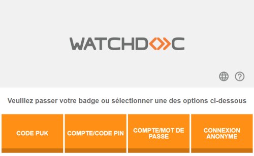
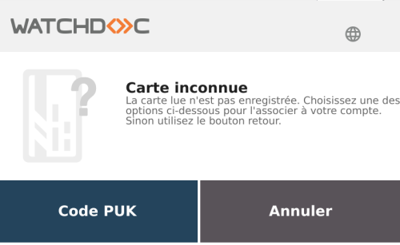
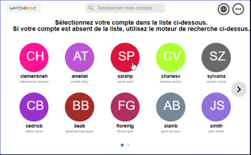
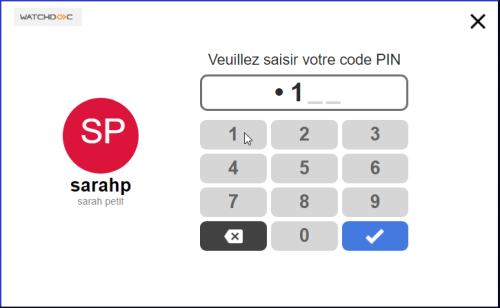

Principe
Lorsqu'un périphérique est géré par un WES, toutes ses fonctions sont verrouillées. Pour accéder aux fonctions, l'utilisateur doit s'authentifier.
En fonction des compatibilités de la marque, il peut le faire :
-
soit depuis le clavier du périphérique
-
soit avec un badge.

Pour certaines marques de périphériques, l'interface d'authentification qui s'affiche n'est pas le WES Watchdoc, mais l'interface native du périphérique d'impression.
Certains périphériques autorisent aussi l'accès anonyme qui ne nécessite donc aucune authentification.
Authentification depuis le clavier
En fonction des compatibilités de la marque et du paramétrage défini, l'authentification par clavier est possible en saisissant :
-
un code PUK (mode d'authentification non-recommandé).
Le code PUK comporte entre 6 et 10 chiffres. Il est généré automatiquement lors de la mise en oeuvre de Watchdoc en fonction de la configuration et mis à disposition de l'utilisateur via la page "Watchdoc - Mon compte".
N.B. : par souci de sécurité, nous déconseillons l'authentification par code PUK. -
un code PIN et compte utilisateur.
Le code PIN comporte entre 4 à 6 chiffres. Il fonctionne en complément du nom d'utilisateur. Il doit être défini par l'utilisateur dans la page "Mon compte" avant une première utilisation de Watchdoc. Il est enregistré dans un fichier .json si Watchdoc fonctionne seul ou dans une base SQL si Watchdoc est installé en domaine (configuration master/slaves) ou dans la base Invités de WSC. Il peut être enregistré en clair (non-recommandé) ou hashé (recommandé par souci de sécurité).
-
un compte utilisateur (nom d'utilisateur et mot de passe Active Directory/LDAP/Microsoft Entra ID).
Bien qu'il s'agisse d'une solution simple à déployer, elle est rarement utilisée car les utilisateurs ont tendance à utiliser des mots de passe simplistes et les problèmes de mot de passe dus à des erreurs de frappe sur le clavier virtuel peuvent augmenter le nombre d'appels au service d'assistance. Si vous choisissez cette solution, nous vous recommandons vivement d'utiliser le protocole SSL pour toutes les communications entre le serveur et le copieur.
Authentification par badge
Le périphérique d'impression doit être équipé d'un lecteur de badges compatible.
Chaque badge doit avoir un code unique (code de lecture) : vérifiez auprès de votre fournisseur qu'il n'y a pas de doublons dans les codes de lecture.
Pour s'authentifier, l'utilisateur passe son badge devant le lecteur.
Lors de la première utilisation du badge, une étape d'enrôlement Action au cours de laquelle un compte utilisateur est associé au numéro de badge qui lui appartient. L'enrôlement est réalisé lors de la première utilisation d'un badge. L'enrôlement peut être réalisé par le responsable informatique lorsqu'il délivre le badge à un utilisateur ou par l'utilisateur lui-même qui saisit son identifiant (code PIN, code PUK ou identifiant et mot de passe) qui est alors associé à son numéro de badge. Une fois l'enrôlement réalisé, le numéro de badge est associé définitivement à son propriétaire. est nécessaire :
Action au cours de laquelle un compte utilisateur est associé au numéro de badge qui lui appartient. L'enrôlement est réalisé lors de la première utilisation d'un badge. L'enrôlement peut être réalisé par le responsable informatique lorsqu'il délivre le badge à un utilisateur ou par l'utilisateur lui-même qui saisit son identifiant (code PIN, code PUK ou identifiant et mot de passe) qui est alors associé à son numéro de badge. Une fois l'enrôlement réalisé, le numéro de badge est associé définitivement à son propriétaire. est nécessaire :
L’utilisateur doit alors :
-
passer son badge devant le lecteur ;
-
saisir un identifiant sur l'écran du périphérique (en fonction du paramétrage) :
-
soit son code PUK (N.B. : par souci de sécurité, nous déconseillons l'authentification par code PUK) ;
-
soit son compte (login et mot de passe Active Directory/LDAP/Microsoft Azure AD) :

-
Modes combinés
Il est possible d’utiliser une authentification par clavier seul, par badge seul ou de combiner les 2 modes, avec par exemple le badge comme authentification principale et le code PUK si la personne a oublié son badge.
Lors de l'authentification, Watchdoc fournit au périphérique l’adresse e-mail de l’utilisateur lors de sa connexion afin qu'elle soit utilisable dans l’application de numérisation standard pour remplir le champ Expéditeur. En revanche, elle n'est pas utilisée pour remplir le champ Destinataire.
Mode Galerie
Le mode Galerie est compatible avec le WES Sharp.
Il permet à l'utilisateur de sélectionner son compte dans une galerie, liste de comptes présents dans l'annuaire, affichés sur l'écran du périphérique sous forme d'identicônes.
S'il ne trouve pas son compte dans la galerie, l'utilisateur dispose d'un moteur de recherche. Cet outil lui permet de retrouver son compte à l'aide d'une combinaison de critères prédéfinis (login, nom complet, adresse e-mail ou domaine) en utilisant la recherche exacte ou la recherche approximative (à partir de 3 caractères, par exemple, "pon" permet de retrouver "Pontieux", Dupont" ou "Duponchel").

Une fois son compte trouvé, l'utilisateur peut s'authentifier à l'aide de son code PIN :

Accès anonyme
Il est possible de permettre l'accès au périphérique d'impression sans exiger l'authentification de l'utilisateur. Dans ce cas, généralement, les fonctions proposées sont limitées.